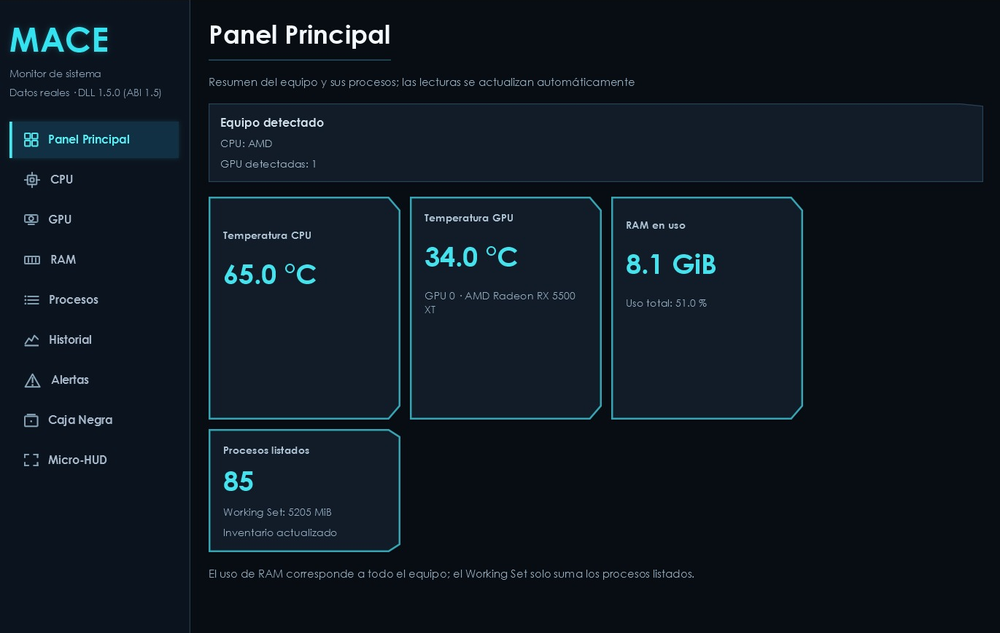

Novedades de la versión 1.1
La lectura de sensores se apoya ahora en LibreHardwareMonitor, una biblioteca especializada, en lugar de integraciones propias por fabricante.
Temperatura real
CPU Intel y AMD, y GPU Radeon, leídas mediante LibreHardwareMonitor. Verificada en equipos Intel y AMD.
Micro-HUD
Una ventana pequeña, siempre visible, con las métricas que elijas encima de tus juegos o programas.
Controlador opcional
PawnIO solo hace falta para la temperatura y la potencia de la CPU. Sin él, todo lo demás funciona.
Publicación verificada
Cada versión se compila y prueba automáticamente en GitHub Actions antes de publicarse, con su SHA-256.
Instalar en tu PC
-
Descarga el instalador
Pulsa «Descargar para Windows» y guarda
MACE-Setup.exe. Incluye todo lo necesario: no hace falta instalar Java. -
Ejecútalo
Elige la carpeta de instalación y termina. MACE queda en el menú Inicio y en el escritorio.
-
Abre MACE como administrador
Windows te pedirá permiso al abrirlo. Con él, MACE ve los procesos de otros usuarios y los sensores que requieren elevación.
app\prerequisites\PawnIO_setup.exe. MACE nunca lo instala por su cuenta; si no lo instalas, verás el motivo en lugar de la temperatura.
¿Solo quieres ver la interfaz? Abre MACE-Preview desde el menú Inicio: muestra datos simulados y no pide permisos de administrador.
Qué mide y de qué depende
Cada lectura llega con su estado. Cuando falta el controlador o el fabricante no expone un sensor, verás «N/D» y el motivo.
| Componente | Qué muestra | Qué necesita |
|---|---|---|
| CPU | Uso, temperatura y potencia | El uso funciona siempre. En Intel y AMD, la temperatura y la potencia requieren el controlador PawnIO y abrir MACE como administrador. |
| GPU NVIDIA | Temperatura, uso, potencia, ventilador y memoria de vídeo | El controlador de NVIDIA. |
| GPU AMD Radeon | Temperatura, uso, potencia, ventilador y memoria de vídeo | El controlador de AMD; MACE las lee mediante LibreHardwareMonitor (requiere PawnIO y administrador). |
| GPU Intel | Uso y potencia; temperatura según el modelo | El controlador gráfico de Intel. |
| Memoria | RAM total, disponible y en uso | Nada adicional. |
| Programas | Lista con memoria usada, si responden y botón para cerrarlos con confirmación | Permiso de administrador para ver todos. |

Avisos e historial
Temperatura alta
Te avisa cuando la CPU o una tarjeta gráfica pasa de 75 °C, y en rojo a partir de 85 °C.
Programas con problemas
Detecta programas cuya memoria crece sin parar o cuya ventana deja de responder. Solo avisa: cerrarlos siempre es decisión tuya.
Caja negra
Guarda en tu equipo las lecturas y los avisos de las últimas horas, para revisar qué pasó después de un cuelgue.
Requisitos y comprobación
Sistema
Windows 10 u 11 de 64 bits. Para datos completos, permiso de administrador.
Linux y macOS
No están disponibles: la parte que lee el hardware usa funciones exclusivas de Windows.
Archivo original
El SHA-256 del instalador aparecerá aquí cuando haya una versión publicada.
Para comprobarlo, abre PowerShell en la carpeta de descargas y compara el resultado con el valor de arriba:
Get-FileHash .\MACE-Setup.exeTambién puedes ver todas las versiones publicadas.